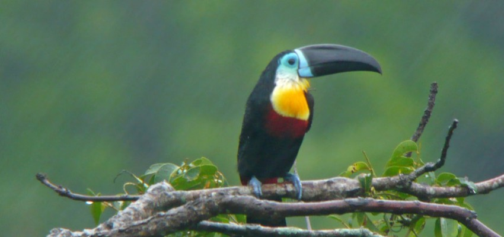

Birds never cease to amaze us. Avian abilities are varied, including diving, swimming and complex nest-building skills, but their ability to fly has long been envied by humans. Equally astonishing is the distance some birds fly. It has been estimated that more than 200 million birds migrate each year all over the planet. Many birds fly thousands of miles, crossing deserts and ocean to reach their breeding and feeding grounds. Much of bird behaviour, such as the ability of migrants to find their way across continents and back, continues to be a mystery.
It is believed that there are approximately 9,700 bird species in the world. This makes birds the second largest vertebrates group of animals, after fish. Birds vary greatly in size: from a hummingbird weighing just 1.6g(3/50 oz), to an ostrich weighing in at 150 kg (330 lb). Although most birds fly, there are some flightless birds - such as kiwis, penguins, rheas and ostriches. Other birds are adapted to aquatic life in oceans, rivers and lakes. The shape of birds' feet and bills, reflects adaptation. Some aquatic species have bills modified to filter feed on small particles in water, whereas birds of prey use hooked bills to hold down and tear apart prey. In many bird species, both males and females share nest making and the rearing of young, and some birds also display social behaviours in groups.